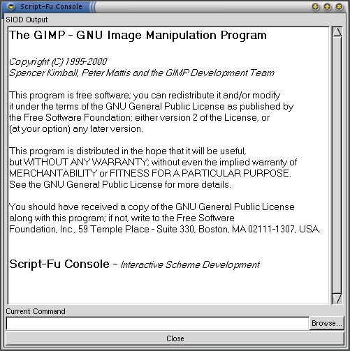

The following tutorial is written for The Gimp 1.1.24. Some things described here will not work or work different with The Gimp 1.0.x.
This is a short tutorial to Script-Fu programming. I'll try to give a short intro into the world of Script-Fu and explain how basic things works. We will create a complete script-fu step-by-step. The goal is to have a Script-Fu, which produces a metal style text. I assume, that the reader has a basic knowlege of Scheme, which is the programming language, which is used in Script-Fu
Ok, now we take the first step, we try to do what we want to do in Script-Fu first in The Gimp as normal. That is important, 'cause we need to know exacly which operation we need and in which order we need to call them.
So lets create our test image, first of we create a new rgb image (File->New Image) and insert some text into it, say the word "Test".

Then we duplicate the text and apply a metal gradient to the top layer.

Then we take the second text layer and enlarge it a bit, to do so, we use the alpha-to-selection function and grow the selection by a few pixels. Then we fill the selection with the same gradient, but in a another orientation.
At last, we merge the layers and apply a standard drop shadow. If that is done, we auto-crop the image, to remove all unnecessary parts of the image.
Ok the image looks now as we expected it, so lets summarize, what we have done:
The task is now to reproduce this steps in the Script-Fu Console.It is the place where you can enter Script-Fu Commands and test them. Its the place where you should test all new functions you aren't handy with and its the place where you can more or less debug your written scripts. Its the easiest if you test every line of Script-Fu first in the console and then paralell write the Script-Fu, if the commands acts as you expected it.
To do so, we open the Script-Fu Console (Xtns->Script-fu->Consol). If the console is open, we click on the Browse... button in the bottom left corner, this brings us to the DB Browser. Thats the place where you can search for functions, which you can access from within Script-Fu. Along with the name of the function, you also get a description of the arguments its expect and a general description what the function does.

So now its time to reproduce our first step in the image creation, so we need a function to create an new image. Most of the functions you find in the DB Browser have similar names as in the menus of the Gimp. After a little search for "new" we find the function gimp-image-new, which sounds like what we are searching for. We enter the following into the console:
(gimp-image-new 256 256 RGB)
and we will get an output as follows:
=> (gimp-image-new 256 256 RGB) (3)
The first line is simply the command that gots executed, the second line is the return value of the function. As you can read in the DB Browser, this is the id of the newly created image. You can simply use the id as argument to functions in the console. The return value is also the first pitfall on our journey to Script-Fu. It comes as a one element long list and not as a integer value! So to use the value, we have to get the first element of the list with car, it will then return the image id 3.
You might now wonder, where the image is that we have created, cause you cannot see it. The answer is, that we don't have a display for it, so the image is only inside the memory, but is not displayed, so we need create an display for it. So we try (gimp-display-new 3), but we get an error:
ERROR: Procedural database execution failed:
(gimp_display_new 3)
So, thats just another pitfall. Not all functions in Script-Fu, acts the same as there counterparts in the menu's. Sometimes there are much more low-level, so you have to do some more work, to get the results you expect. The problem here is that our newly created image, doesn't contain any layers. To display an image, we actually need at least one layer. So the next step is to create an layer:
=> (gimp-layer-new 3 256 256 RGB-IMAGE "foobar" 100 NORMAL-MODE) (21)
You might notice, that the constants RGB-IMAGE and NORMAL-MODE is listed as RGB_IMAGE and NORMAL_MODE in the DB Browser (notice the underscore '_'). You have to replace all the underscrores with minus's '-' in the Script-Fu world. If your are unsure if your replacements are right, just enter the constant into the console.
The next step is to add the layer newly created layer to the image, as described in the DB browser:
=> (gimp-display-new 3) (4)And now we can finally display our image:
=> (gimp-display-new 3) (4)
The displayed image looks a bit wired, cause it is filled with random colors, to erase them, we will fill the layer with the current background color.
=> (gimp-drawable-fill 21 BG-IMAGE-FILL) ()
The function to fill a layer is called gimp-drawable-fill and not gimp-layer-fill as you might expect, thats because a layer is a drawable. So if you are searching for functions to manipulate layers, you should also look out for stuff that manipulates drawables.
Now we have our image set up. To quick for you? Then lets summarize and write our first scheme function. First we encapsule all into a let* clause and than add the let* clause into a function body:
(define (my-make-new-image)
(let* ((image (car (gimp-image-new 256 256 RGB)))
(layer (car (gimp-layer-new image 256 256
RGB-IMAGE "foobar" 100 NORMAL-MODE))))
(gimp-drawable-fill layer BG-IMAGE-FILL)
(gimp-image-add-layer image layer 0)
(gimp-display-new image)
image))
The last line in a scheme function is the return value, so image is the return value in this function.
So back to our metal-text thing, we need now to add a text string and play with it. A little browsing in the DB brings up gimp-text-fontname. To call it we type:
=> (gimp-text-fontname 3 21 -1 0 "Foobar" 0 TRUE 25 PIXELS "-freefont-blippo-heavy-r-normal-*-24-*-*-*-p-*-iso8859-1") (33)
And voila, we have our text on a newly created layer. The string "-freefont-blippo-heavy-r-normal-*-24-*-*-*-p-*-iso8859-1" might look as black-magic to you, but we will see later and easy way to create it.
Now we need to duplicate that layer, you might notice that there is now duplicate layer in the DB, so we need to do it manually:
(define (my-duplicate-layer image layer)
(let* ((dup-layer (car (gimp-layer-copy layer 1))))
(gimp-image-add-layer image dup-layer 0)
dup-layer))
and than:
=> (my-duplicate-layer 3 34) 41
Than we need to add some space for the enlarged text border, gimp-layer-resize is our friend:
(gimp-layer-resize 41 200 100 5 5)
This works, but the width and height are hard coded, so we try again in a more flexible manner:
(define (my-layer-add-border layer border) (let* ((width (car (gimp-drawable-width layer))) (height (car (gimp-drawable-height layer)))) (gimp-layer-resize layer (+ width border) (+ height border) (/ border 2) (/ border 2))))
Now we need to transfer the layers alpha cannel to the selection and grow it some pixels:
(gimp-selection-layer-alpha 41) (gimp-selection-grow 3 5)
Before we fill the layer, we have to remove the "Keep trans" flag, which causes that all transparent areas stay transparent:
(gimp-layer-set-preserve-trans 41 0)
Now we will fill the selection with a gradient:
(gimp-blend 41 CUSTOM NORMAL LINEAR 100 0 REPEAT-NONE FALSE 0 0 0 0 30 50)
Huh, now we have everything for our script-fu ready, we just need to attach the pieces. In the following steps we will also remove some unnecessary action and probably add some stuff.
Ok, so how to write a script-fu? Simply have a look at ~/.gimp-1.1/scripts/, thats the place where all script-fu's will end. So open your favorite text editor and create a file my-metal-logo.scm and save it into the directory ~/.gimp-1.1/scripts/ When you then press Xtns->Scritp-fu->Reload your script will be loaded into "The Gimp", but before you will see anything, we first need to register our function.
The function script-fu-register is the function, which is capable of doing that. The first argument is the function name of your newly written function, the second is the place, where your function will be appear inside the Gimp. The other arguments are for the Copyright, author, etc. The eight and the following arguments become interessting again, this are the arguments, which your function will recive. An example script-fu-register call would look like this:
(script-fu-register "script-fu-gradient-example" _"<Toolbox>/Xtns/Script-Fu/Utils/Custom Gradient..." "Create an example image of a custom gradient" "Federico Mena Quintero" "Federico Mena Quintero" "June 1997" "" SF-ADJUSTMENT _"Width" '(400 1 2000 1 10 0 1) SF-ADJUSTMENT _"Height" '(30 1 2000 1 10 0 1))
This document is covered under the GNU Free Documentation License